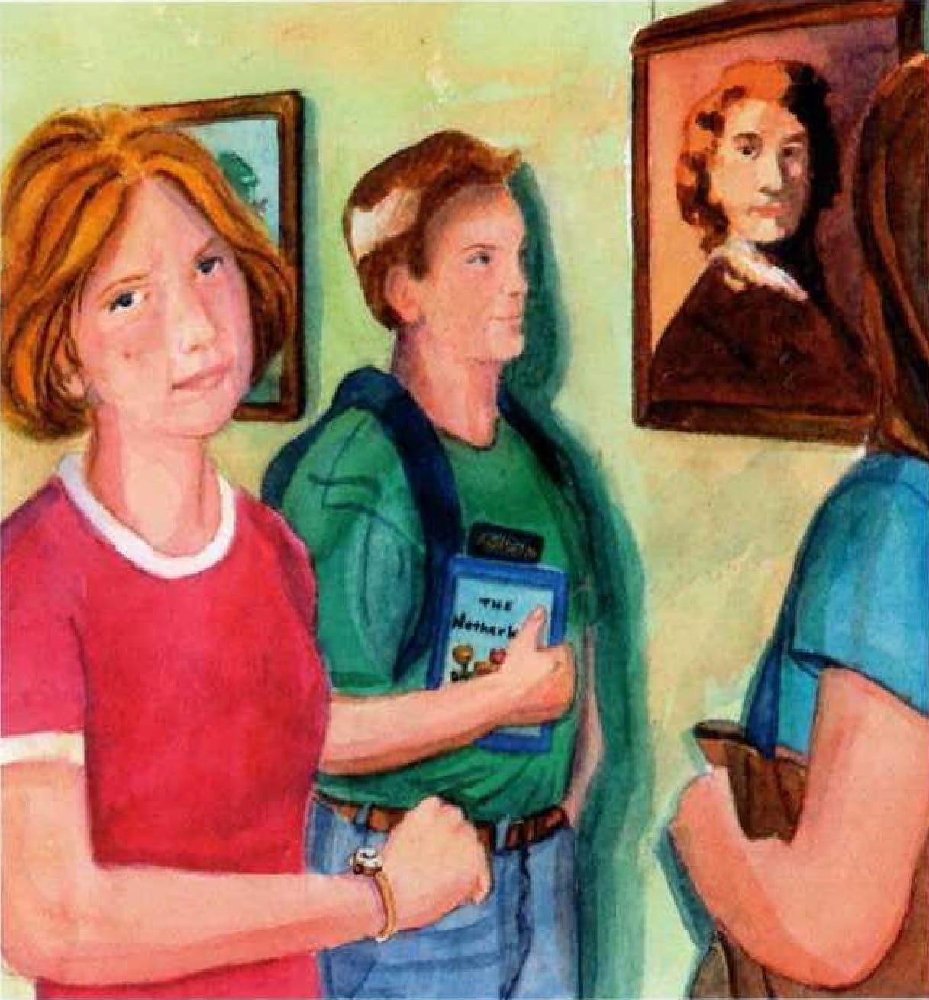
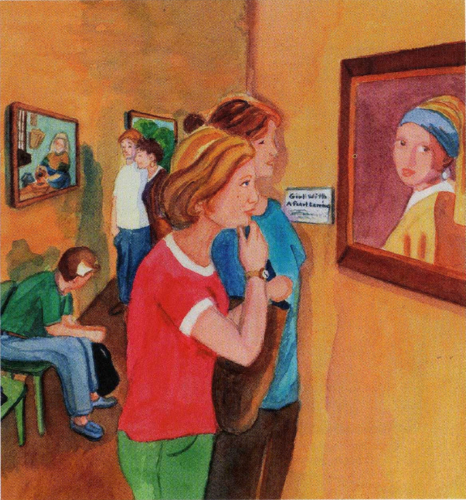
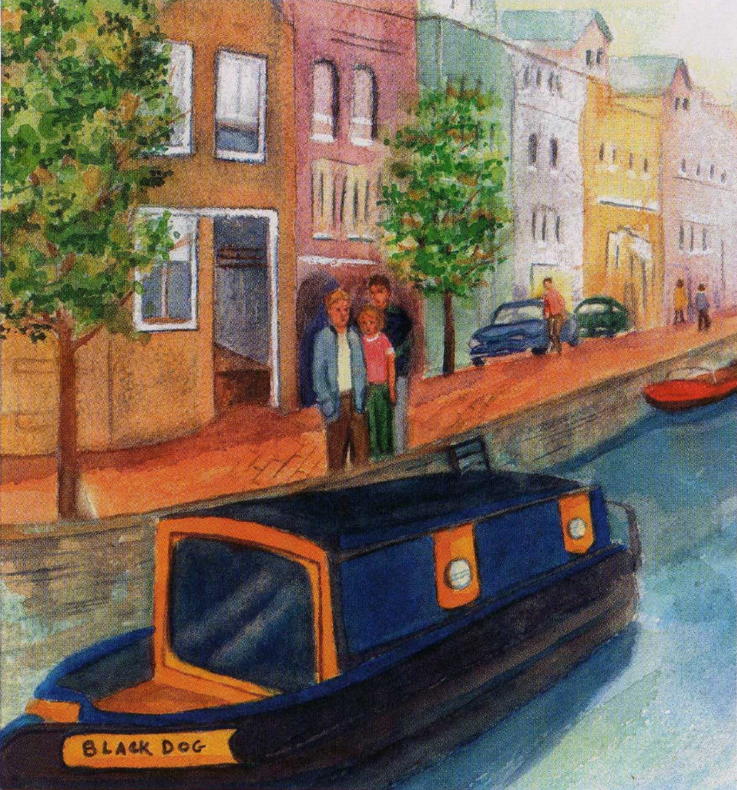
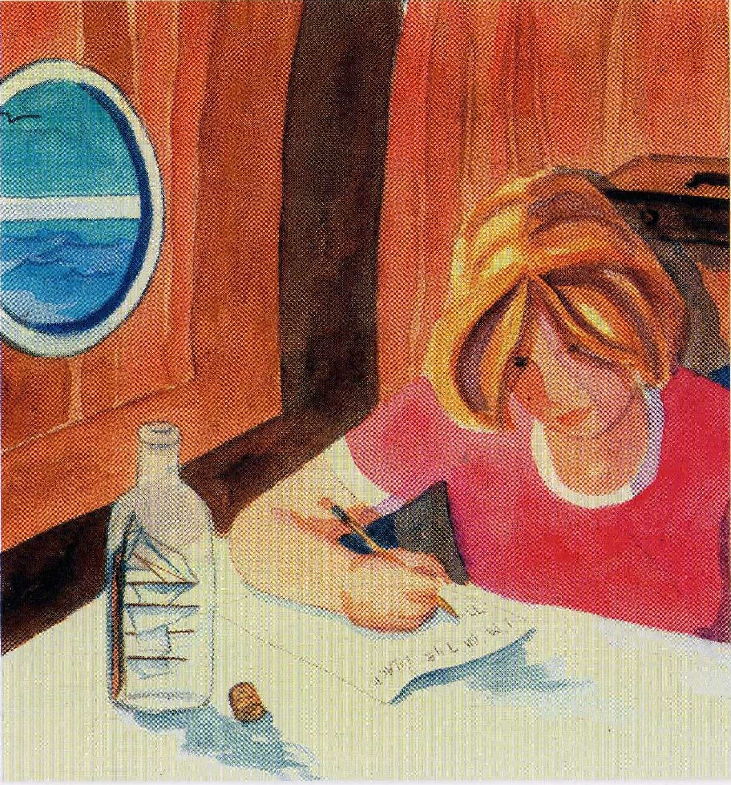
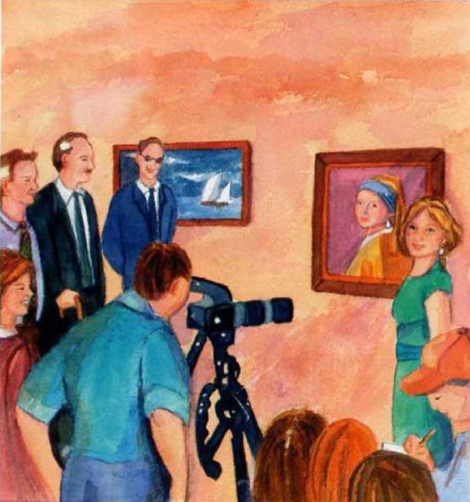

Listening
Penguin Readers
EASYSTARTS
The Pearl Girl • 11:47
SUMMARY
Kate Grant comes from Canada. She is visiting Europe with her mother and father. One evening she sees two men in a museum. They are taking a very famous picture, Girl with a Pearl Ear-ring. What can Kate do?

PARAGRAPH 1
Kate Grant is fifteen and comes from Canada. She is visiting the Netherlands with her mother and father. On June 8th, the Grants are at a museum in The Hague. "This is very good". Mr. Grant says. He is looking at a picture of an old man. "Yes," Mrs. Grans says. "What do you think, Kate?" "It's OK," Kate says. She looks at her watch. It is 4:45.
PARAGRAPH 2
Two minutes later she sees a picture of a young girl with an ear-ring. Kate smiles. She loves earrings. She looks at the girl's face. "Who are you?" she thinks. "What are you looking at?" "That's a very famous picture," Mrs. Grant says. A sign next to it says, "Girl with a Pearl Earring." "It's beautiful," Kate says.
PARAGRAPH 3
At 4:58 the Grants are drinking coffee near the museum. "Julia, do you have the guide book?" Mr. Grant asks. "No, Carl. You have it," Mrs. Grant says. They look for the guide book in their bags, then Mr. 'Grant says, "Oh no, I remember now. It's on a chair near 'Girl with a Pearl Earring'. My passport is in that book!" Kate gets up quickly. "Stay here, she says. "I can find it."

PARAGRAPH 4
Kate runs to the museum. A guard is closing the door. “Stop!” Kate says. “My father’s passport is in the museum." “I’m sorry, but we close at five o’clock, "the guard says. A sign on his shirt says, “Paul Van Dyck.” “Please,” Kate says, “It’s very important.” The guard looks at his watch, then a(t) Kate. “OK,” he says and smiles. “Come with me.”

PARAGRAPH 5
Kate goes into the museum with Paul Van Dyck. It is dark and there aren’t any people in the rooms. “Where is the passport?” Paul asks. “Do you know?” “Yes. It's on a chair near that picture of a girl with an earring,” Kate says. They walk for a minute, then Paul Van Dyck stops. “Sshh!” he says. "l can hear voices."

PARAGRAPH 6
Kate looks at Paul. He isn’t smiling now. Then she hears voices, too. "Be very, very quiet," Paul says. He takes a phone from his coat pocket, but suddenly there are two men in the room. One is tall and has a big, black bag in his hands. The short man has a gun. They look at Kate and Paul. Kate and Paul look a(t) the men. Time stops.

PARAGRAPH 7
"Put your phone on the floor,” the short man says. "Now!" His voice is cold. “No,” Paul says. Suddenly there is a bang! Paul falls down and says. “My leg!” Kate looks at him. “Get the girl," says the tall man. The short man puts his cold hand across Kate’s mouth, She is very scared.“Come with us,” he says.

PARAGRAPH 8
A minute later Kate and the thieves are in a small street behind the museum. They get into a car, and the tall thief drives very quickly for thirty minutes. The men don't talk. Kate is on the floor. She can see a picture in the black bag. It is “Girl with a Pearl Earring", “Where are we going?" she thinks. Then she looks up and sees a sign. It says, ”Amsterdam 10.

PARAGRAPH 9
At 5:40 the car stops. “Get up," the short thief says. His voice is very quiet. He opens the car door. The gun is under his coat. “Smile," he says. Kate is scared but she smiles. There are people in the street. She can see a boat. Its name is the Black Dog, The cold gun is next to her back. The tall thief is behind them with his black bag.
PARAGRAPH 10
“Sit down and be quiet!" says the short thief. They are in the Black Dog’s kitchen. It has one small window. Kate sits on a chair, and the men close the door and go. Later, Kate hears their voices. “What do we do now?” the short man says. “We send a note to her family,” the tall thief answers. “They want the girl back. We want money. It isn’t difficult.”

PARAGRAPH 11
Kate is very scared. She looks round the kitchen. Suddenly, she sees a ship in a bottle. There is a pen next to it. Quickly she writes a note. It says: “I’m on the Black Dog with two thieves. They have ‘Girl with a Pearl Earring’. Call the police! My name is Kate Grant.” Then she puts her note in the bottle. She opens the small window and throws the bottle into the canal.
PARAGRAPH 12
At 9:15 that evening the bottle is a kilometer from the Black Dog. An old man is walking next to the canal. He stops. “A ship in a bottle!” he thinks. “That’s interesting.” He picks the bottle out of the water. Then he sees Kate’s note and reads it. ‘“Thieves!’” he thinks. “This is important.” He makes a call. “Hello? Police?” he says. He is talking very quickly. “Listen to this.”

PARAGRAPH 13
At 11:25 Kate is trying to sleep in the Black Dog's kitchen. Suddenly her eyes open. She can hear a woman’s voice. “POLICE!" the woman says. “Put the gun on the floor. That’s right. Now put your hands on your head. Quickly!” Then the kitchen door opens. Kate sees three policemen and two policewomen. “It’s OK,” one of the policemen says. “We’re here now.”

PARAGRAPH 14
Two days later Kate is in The Hague again with her mother and father. Some TV people are there, too. The museum‘s director and Paul Van Dyck are standing next to her. The director smiles, “Thank you very much, Kate,” he says. Then he gives her a small bag. Kate opens it and smiles. In the bag, there are two beautiful pearl earrings.
